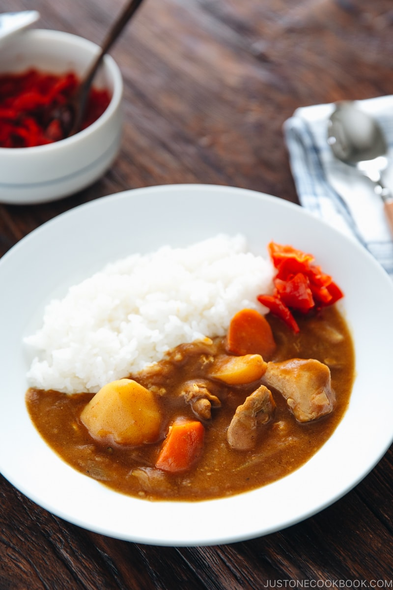

Curry Recipe
A Simple but Amazing Recipe for your Instant Pot
This super simple recipe will transport you to Japan with its great flavors
Its simple, quick, and best of all, only dirties one pan
Ingredients
- 3 Onions
- 1 1/2 Carrots
- 3 Yukon Gold Potatoes
- 2 Cloves of Garlic
- 1 1/2lb boneless, skinless chicken thighs
- 1/8 tsp Diamond Crystal Kosher Salt
- 1/8 tsp freshly ground black pepper
- 1 Tbsp neutral-flavored oil
- 3 cups of Chicken Broth
- 1 Package of Japanese curry roux
- 1 Tbsp of Ketchup
- 1 Tbsp of Soy Sauce
Steps
- Add oil to instant pot. Once hot, add chopped onions. Cook for 5 mins
- Add garlic. Cook for 1 minute, stirring
- Add cubed chicken to pot. Mix well until coated with oil
- Add peeled potatoes and carrots
- Add chicken broth and mix well.
- Add curry roux. Do not stir
- Cover and set Instant Pot to pressure Cook mode. Cook for 15 minutes
- When finished cooking, let pressure naturally release
- Remove lid, add ketchup and soy sauce. Cook for an addtioanl 5 mins, stirring
- Serve over rice